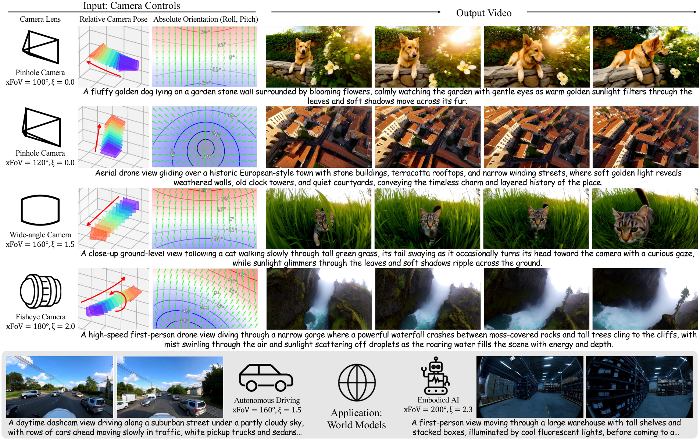
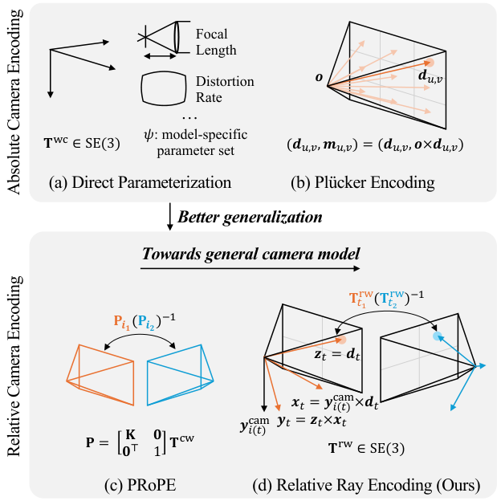
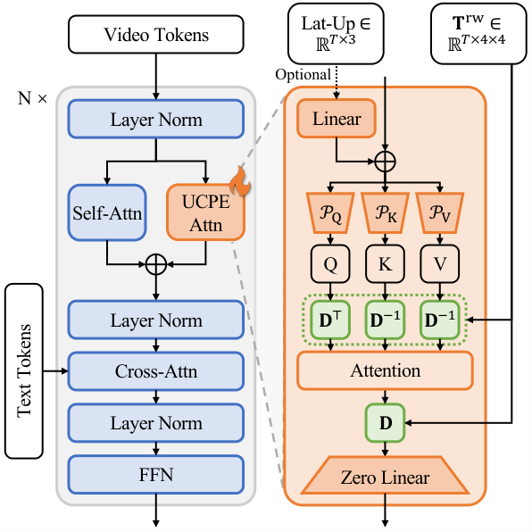
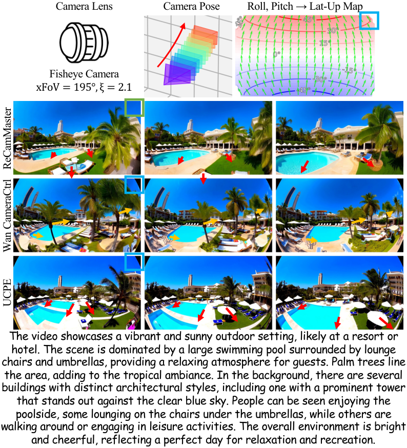
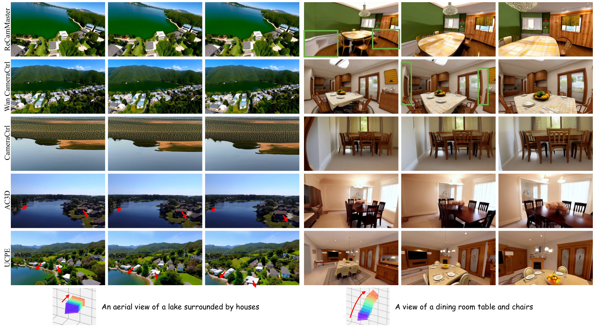

Unified Camera Positional Encoding for Controlled Video Generation
简单摘要
作者的出发点是：自动驾驶、机器人和世界模型里的真实视频往往来自多种镜头，除了相机位姿，还同时带有不同视场角和畸变参数。过去很多方法要么只编码外参，要么把每个视角都当成统一针孔投影，这会导致模型只能粗略地“知道相机在动”，却不知道同一张图内部不同像素的成像几何其实并不一致。

UCPE 的核心思路是把每个视觉单元都绑定到一条具体观察射线上，而不是让整张图共享一套相机级编码。这样，注意力层不再只比较“来自哪个相机”，而是直接比较“这两个视觉单元对应的射线在几何上是什么关系”。在这个基础上，再用 Lat-Up 图提供绝对俯仰与滚转线索，模型就能同时处理相对相机运动和绝对朝向控制。
核心创新
第一，论文把相机编码粒度从“整台相机”推进到“每个视觉单元对应的一条射线”。这一步很关键，因为鱼眼、广角和带畸变镜头的问题，不在于相机整体没有位姿，而在于图像内部不同像素的投影规律并不共享同一个线性模型。UCPE 的相对射线编码正是针对这一点，把几何关系写到视觉单元级别。
第二，UCPE 不是只建模相对关系，还额外引入了绝对方向编码。作者注意到真实世界视频通常存在稳定的重力方向，因此用 Lat-Up 图把每条射线的纬度角和对应的向上方向编码出来。这样模型除了知道“相对前一帧怎么转”，还知道“当前镜头在全局里朝上还是朝下”，从而支持显式俯仰和滚转控制。
第三，论文没有粗暴替换原始扩散 Transformer 的位置编码，而是把 UCPE 通过一个轻量的空间注意力适配器并联注入到预训练模型中。这样既保住了大模型已有的视频先验，又只增加 3550 万参数，在控制能力提升的同时维持了较好的训练和部署效率。
技术细节
Method 一共三步：先统一不同相机模型的几何表示，再把这种几何表示写进注意力层，最后用轻量适配器把它接到预训练视频扩散 Transformer 上。真正的难点不是“再加一个相机 token”，而是如何让针孔、广角、鱼眼乃至非中心相机都能共享一套物理上自洽的编码方式。

3.1 预备知识
3.1.1 相机作为射线映射
作者先把所有相机都统一写成“从像素坐标映射到三维射线”的函数，而不预设具体投影模型。这样无论是普通针孔、鱼眼还是 catadioptric / panoramic 系统，都可以被理解为：给定像素坐标 (u,v)，输出该像素对应射线的起点和方向。这个统一视角为后面的 token 级几何编码提供了共同底座。
$$ \boldsymbol{d}_{u,v} = \mathbf{R} \boldsymbol{d}_{u,v}^{\textrm{cam}}, \qquad \boldsymbol{o}_{u,v} = \boldsymbol{t}. $$
这条并列公式把像素对应的相机射线方向先旋转到世界坐标系，再把射线起点设为相机平移向量。它说明后续相机编码不是抽象地处理姿态参数，而是直接建立在每条射线的几何表达上。
3.1.2 绝对相机编码
论文回顾了两类常见绝对编码：一类直接把内外参作为数值向量输入，另一类使用 Plücker ray 表示，把每条射线写成方向与力矩的组合。它们都能保留一些几何信息，但本质上仍然依赖全局坐标系，因此跨场景、跨镜头泛化时容易不稳定。
$$ \mathbf{D}_{t} = \mathbf{I}_{d/4} \otimes \mathbf{T}_{i(t)}^{\textrm{cw}}, $$
这条式子把当前相机的坐标变换按特征维度展开成块状矩阵，用来统一作用到注意力特征上。它相当于把相机位姿从几何空间搬到网络特征空间，让后续注意力层都能共享同一套相机条件。
3.1.3 相对相机编码
CaPE、GTA、PRoPE 这类方法把相对相机关系显式写进注意力层，优点是对全局坐标选择更稳；但它们默认同一视角内部所有 token 共享同一个相机投影模型，因此仍然无法描述广角和畸变镜头中像素级投影差异。UCPE 的动机，正是把这种“相机级相对编码”继续细化到“射线级相对编码”。
$$ {O} = \operatorname{Attn}\big(\mathbf{D}^{\top}\odot {Q},\; \mathbf{D}^{-1}\odot {K},\; {V}\big). $$
这条式子给出了 CaPE 的基本形式：查询和键先分别乘上各自视角对应的几何变换，再做注意力匹配，而值分支保持原始特征。它的意义是把“两个 token 是否相关”显式建立在相对位姿之上，让注意力权重不再只由外观相似度决定。
$$ {O} = \mathbf{D} \odot \operatorname{Attn}\big(\mathbf{D}^{\top}\odot {Q},\; \mathbf{D}^{-1}\odot {K},\; \mathbf{D}^{-1}\odot {V}\big). $$
这条式子对应 GTA：除了查询和键之外，值分支也先做逆几何变换，聚合完成后再乘回目标视角对应的变换矩阵。相比 CaPE，它在“比较—聚合—回写”三个阶段都保持几何一致，因此更强调跨视角特征传递时的坐标对齐。
3.2 统一相机位置编码
3.2.1 相对射线编码
Relative Ray Encoding 的做法是：对每个 token 构造一套局部射线坐标系，把该 token 对应的观察射线写成“起点 + 方向”的几何对象，再据此得到射线到世界、世界到射线的变换矩阵。这样，注意力层比较的不再是“两个相机的相对关系”，而是“两个 token 对应的两条射线如何在空间里对齐”。它能够自然覆盖非线性镜头投影和视场角变化。
$$ \boldsymbol{r}_t = \big(\boldsymbol{o}_t,\, \boldsymbol{d}_t\big), \quad \boldsymbol{o}_t \in \mathbb{R}^3, \quad \boldsymbol{d}_t \in \mathbb{S}^2, $$
这条式子把一条光线写成“起点 + 方向”的成对表示。这样后面的相机编码不必直接操作原始内外参，而是统一围绕每条射线在空间里的几何意义来建模。
$$ \boldsymbol{z}_t = \boldsymbol{d}_t, \quad \boldsymbol{x}_t = \boldsymbol{y}^{\textrm{cam}}_{i(t)} \times \boldsymbol{z}_t, \quad \boldsymbol{y}_t = \boldsymbol{z}_t \times \boldsymbol{x}_t. $$
这条并列公式是在为每个视角构造一组正交局部坐标轴。作者先用观察方向确定主轴，再通过叉乘补齐其余两个轴，从而得到一个稳定的射线局部参考系。
$$ \mathbf{T}^{\textrm{wr}}_t = \begin{bmatrix} \mathbf{R}^{\textrm{wr}}_t & \boldsymbol{t}^{\textrm{wr}}_t \\ \mathbf{0}^\top & 1 \end{bmatrix}. $$
这条式子把旋转和平移写成齐次变换矩阵，方便后续统一执行坐标变换。它说明论文里的相机/射线几何不是零散地分别处理，而是被组织成标准的矩阵运算接口。
3.2.2 绝对方向编码
仅有相对射线关系还不足以区分全局俯仰和滚转，因此作者又引入 Lat-Up 图：用每条射线的纬度角编码绝对仰角，再通过小角度旋转后的投影位移构造 up 方向。这个绝对方向分支为生成器提供了重力对齐的全局朝向线索，使得用户可以直接控制 pitch / roll，而不只是相邻帧之间的相对旋转。
$$ \text{Lat}_t = \arctan2 \big(-d_{t,y},\, \sqrt{d_{t,x}^{2} + d_{t,z}^{2}}\big), $$
这条式子把三维方向转换成纬度角，用来生成可注入网络的绝对朝向信号。这样模型不仅知道相对相机关系，也能知道当前视角在全局方向上的位置。
3.3 用于 UCPE 注入的空间注意力适配器

3.3.1 带混合编码的空间注意力
在具体实现上，作者把 world-to-ray 变换和 RoPE 组合成块对角的混合编码：前半部分负责射线空间几何，后半部分保留图像空间位置关系。这样做的好处是，模型既不会丢掉图像局部结构，又能把跨视角几何约束显式写进注意力的查询、键、值交互里。
3.3.2 通过注意力适配 Transformer
UCPE 没有直接替换原始 Wan DiT 的自注意力层，而是并联增加一个 LoRA 风格的 UCPEAttn 分支，并先把 token 压缩到原维度的 1/8。这样既降低额外参数和计算量，又通过零初始化输出层保证初始时不会破坏预训练模型的分布。论文的经验结果也说明，并联注入明显优于把适配器插到自注意力前或后。
实验结论
实验部分重点验证三件事：UCPE 是否能在多种镜头条件下保持相机控制；是否能在未见数据集上泛化；以及轻量适配器的具体设计为什么有效。作者先合成了约 4.8 万段带随机视场角和畸变参数的 360° 视频片段，再在 RealEstate10K 上做分布外测试，因此评测不仅考察轨迹控制，还同时考察绝对朝向和镜头控制。
4.1 实验设置
评价指标覆盖四个维度：视频质量、相对位姿控制、绝对朝向控制以及镜头控制。作者分别统计数据集级画质、文本一致性、平移与旋转误差、运动一致性，以及视场角和径向畸变参数误差。这套指标设计和论文目标完全对应——UCPE 不只追求“画面看起来像”，而是同时追求“相机真的按要求运动并具有目标镜头属性”。
4.2 与以往方法比较
和 ReCamMaster、Wan CameraCtrl、AC3D、CameraCtrl 相比，UCPE 在合成数据集的两种设置下都取得了更好的相机可控性与视频质量，同时额外参数只增加 3550 万，约占 7.3B 基座的 0.5%，比 ReCamMaster 少约 90%。在 RealEstate10K 上，即使没有额外适配，UCPE 仍在相对相机位姿控制上优于所有基线，说明这种射线级编码确实带来了更强的跨数据集泛化能力。


4.3 消融研究
消融结论也很清晰。首先，适配器里的特征压缩比例并非越小越好，1/8 在效率和性能之间给出了最优折中。其次，把适配器放在自注意力前或后都会明显削弱控制和画质，说明并联结构最适合在不破坏预训练先验的前提下引入几何条件。最后，用 PRoPE 或 GTA 替换 UCPE 的相对射线编码后，相机镜头控制和相对位姿控制都会下降，表明“每个视觉单元一条射线”的细粒度建模才是论文真正起作用的部分。
理解评价
我认为这篇工作的真正贡献，不是又提出了一种“可控相机视频生成”技巧，而是把问题重心从“给模型喂一组相机参数”转成了“让每个 token 都理解自己对应的成像射线”。这个改写非常本质，因为它让镜头畸变、超广角以及非线性投影不再是外部噪声，而是直接进入注意力计算的第一类几何对象。
论文目前的主要局限在于，它仍然建立在预训练视频扩散 Transformer 之上，训练和推理成本都不低；同时绝对方向分支依赖重力对齐这一现实先验，因此对极端自由旋转镜头或不稳定姿态数据的适应性还有待进一步验证。此外，实验虽然已经覆盖了合成镜头和 RealEstate10K，但离更复杂的多传感器自动驾驶场景还有距离。
后续最值得推进的方向有三条：一是把 UCPE 从视频生成继续扩展到更广义的 3D 感知与世界模型；二是研究更强的非中心相机和多镜头联合建模，而不只是在单模型里适配不同镜头参数；三是进一步压缩 adapter 和推理开销，让这种射线级相机控制真正进入更大规模、长时序的生成系统。